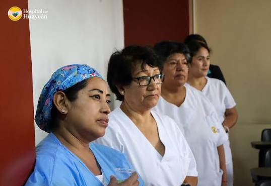
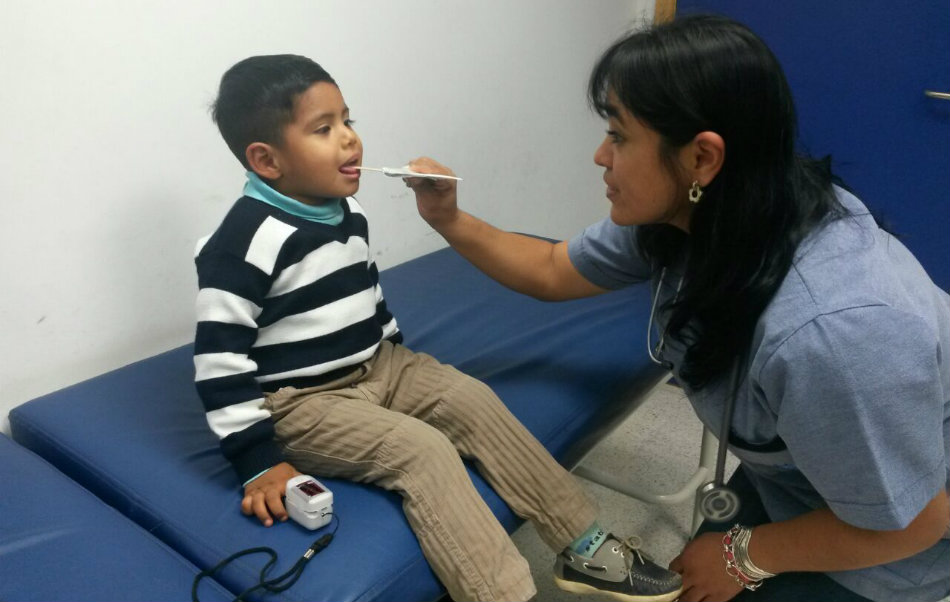
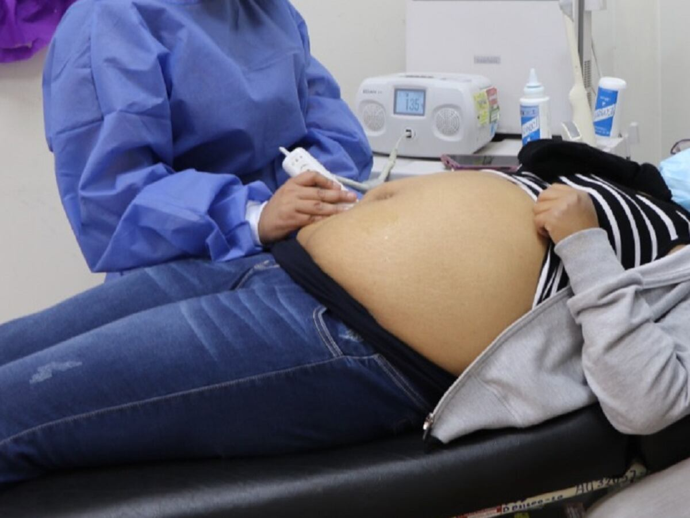
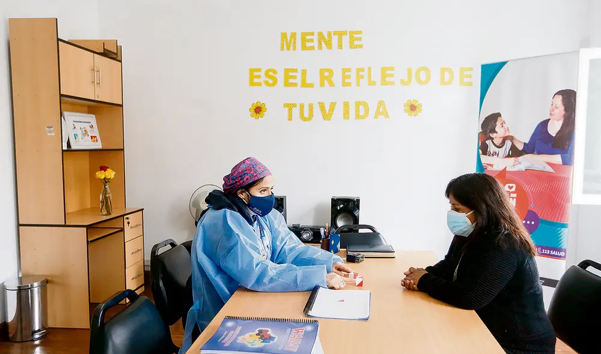
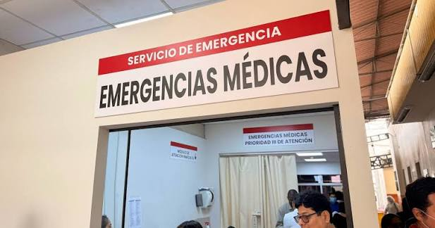
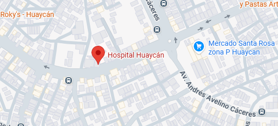

Te cuidamos, te curamos.
Bienvenido al portal público del Hospital de Huaycán. Como institución líder en el sector salud, nuestro principal objetivo es brindarte una atención médica de calidad, accesible y humana. A través de nuestra plataforma, cuidamos tu salud y gestionamos tus citas para que siempre estés en buenas manos. Nos enorgullece ser un pilar fundamental en el bienestar integral de toda la comunidad, ofreciendo servicios médicos avanzados respaldados por tecnología de vanguardia y un equipo de profesionales médicos altamente capacitados.
Sabemos que la prevención, el diagnóstico oportuno y el seguimiento adecuado son esenciales para una vida plena. Por ello, hemos diseñado este espacio digital pensando en tu comodidad y seguridad, permitiéndote acceder a nuestro amplio directorio de especialidades, programar tus consultas médicas sin largas esperas y mantener un contacto directo con tus doctores. Contamos con diversas áreas especializadas, servicios de urgencias disponibles las 24 horas del día, los 365 días del año, y moderna infraestructura para garantizar tratamientos efectivos.
Nuestro compromiso y vocación de servicio van mucho más allá de tratar padecimientos; buscamos promover un estilo de vida saludable y ofrecerte el acompañamiento humano necesario en cada etapa de tu recuperación. Creemos firmemente en el trato empático, la ética profesional y el respeto absoluto hacia cada paciente. Confía en nosotros y en nuestra experiencia para cuidar lo más valioso que tienes. Regístrate o inicia sesión hoy mismo y comienza a disfrutar de todos los beneficios.
Para profesionales: Ofrecemos un entorno de trabajo colaborativo y de excelencia clínica. Brindamos acceso a tecnología médica de última generación y un sistema de gestión eficiente que facilita la labor diaria. Si eres especialista, te invitamos a formar parte de nuestro prestigioso equipo y contribuir juntos al desarrollo de la medicina.
Investigación y educación: Nos consolidamos como un centro de formación continua, impulsando programas académicos y estudios clínicos que buscan innovar en los tratamientos. Creemos que la enseñanza y el aprendizaje constante son pilares inquebrantables para el avance científico y la excelencia médica del mañana.
Ingresar al Portal
Nuestras Especialidades

Medicina General
Servicio de medicina general y atención preventiva integral para el cuidado primario.
Conoce más
Medicina Interna
Atención clínica especializada para el diagnóstico y tratamiento integral en pacientes adultos.
Conoce más
Pediatría
Atención médica especializada en el desarrollo y cuidado de bebés, niños y adolescentes.
Conoce más
Gineco-Obstetricia
Incluye atención materno-infantil integral y realización de cirugías ginecológicas.
Conoce másOdontología
Servicios preventivos y tratamientos especializados para el cuidado de la salud bucal.
Conoce más
Psicología
Acompañamiento, evaluación y tratamiento profesional para el cuidado de la salud mental.
Conoce más
Emergencias
Servicio ininterrumpido de Emergencia y área de Cuidados Críticos para situaciones de riesgo.
Conoce másEncuentra nuestra sede cerca de ti.
Hospital de Huaycán
Av. J.C. Mariátegui S/N, Zona "B" - Huaycán, Ate.
Lima, Perú
📍 Ver en Google Maps